| First action | Packages |
|---|---|
| orphaned | 86 |
| removed | 68 |
| archived | 21 |
| renamed | 1 |
Figure: First recorded action taken of a package. Looking by date most packages’ first action recorded is being added to CRAN. For some it isn’t.

CRAN packages are archived all the time, but a large portion of them eventually gets fixed and return to CRAN. Using public data available from different resources1 on CRAN, we have found that 36% of the archived packages get unarchived at some point (Revilla 2022). The median time for these packages to return to CRAN is ~33 days.
To make sure our assumptions about the raw input data is valid, we will run some initial quality checks based on the data that are available as of 2024-07-06.
A package should never unarchived more times than it is archive. However, there are currently 94 packages unarchived more times than archived. There could be several reasons for this:
| First action | Packages |
|---|---|
| orphaned | 86 |
| removed | 68 |
| archived | 21 |
| renamed | 1 |
Figure: First recorded action taken of a package. Looking by date most packages’ first action recorded is being added to CRAN. For some it isn’t.
We also check what the first recorded event packages have. If the first action recorded for a package is not that it is ‘accepted’, this can indicate some problems on the data that could lead to problems on the conclusions.
A special mention of the ‘removed’ action: This action is usually reserved to copyright issues and it is normal that it is the first action in record for a package as previous records are removed too from CRAN (package source code).
By contrast, we should not expected lack of records on CRAN of ‘accepted’ packages. Based on the current data, this is the case for 135 packages. This could indicated that packages have been ‘renamed’ or ‘removed’. Another explanations could be that there was a dialogue between the package maintainers and the CRAN Team that lead to the package being ‘unarchived’ without new ‘accepted’ packages. It could be because of a missing entry in the CRAN data.
| Multiple actions | Events | % events |
|---|---|---|
| 1 | 60011 | 86% |
| 2 | 9101 | 13% |
| 3 | 331 | 0% |
In total there are 425 ‘unarchived’ events that do not have the corresponding ‘accepted’ package included event (on the same date). Currently, this is the case for 413 packages out of 9284 (4%).
On the contrary, there are some events that are not expected to happen on the same day:
| Multiple actions | Events | % |
|---|---|---|
| accepted & unarchived | 4344 | 93.460% |
| accepted & orphaned | 121 | 2.603% |
| accepted & archived & unarchived | 109 | 2.345% |
| accepted & archived | 63 | 1.355% |
| archived & unarchived | 7 | 0.151% |
| accepted & removed | 3 | 0.065% |
| accepted & orphaned & unarchived | 1 | 0.022% |
Those with three different actions imply that there has been multiple revisions from the CRAN Team on the same day.
In total there are 622 different packages identified with problematic records/processing from 9284. Out of these, 118 were found to have two or more different issues. Depending on which issue, they might be corrected to the best of our abilities, or simply be discarded depending on the issue and question we are trying to answer.
Now that we have looked into the data quality, we can start trying to answer some questions:
| Times archived | Packages | Min. | 1st Qu. | Median | Mean | 3rd Qu. | Max. |
|---|---|---|---|---|---|---|---|
| 1 | 3361 | 1 days | 9 days | 33 days | 128 days | 125 days | 3292 days |
| 2 | 662 | 1 days | 8 days | 28 days | 92 days | 90 days | 1949 days |
| 3 | 175 | 1 days | 7 days | 27 days | 92 days | 86 days | 882 days |
| 4 | 59 | 1 days | 5 days | 18 days | 73 days | 82 days | 652 days |
| 5 | 16 | 1 days | 3 days | 13 days | 28 days | 48 days | 93 days |
| 6 | 5 | 3 days | 17 days | 27 days | 73 days | 63 days | 254 days |
| 7 | 1 | 2 days | 2 days | 2 days | 2 days | 2 days | 2 days |
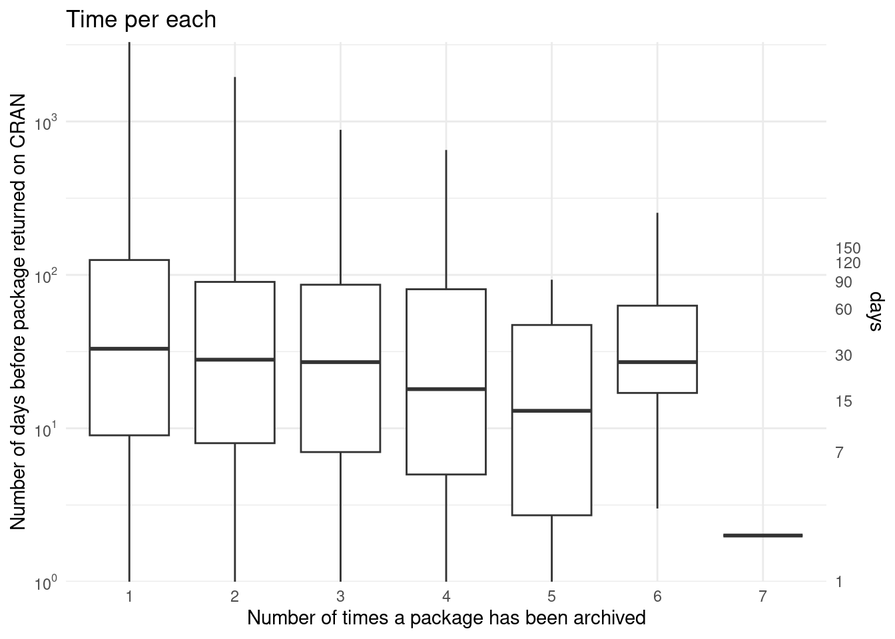

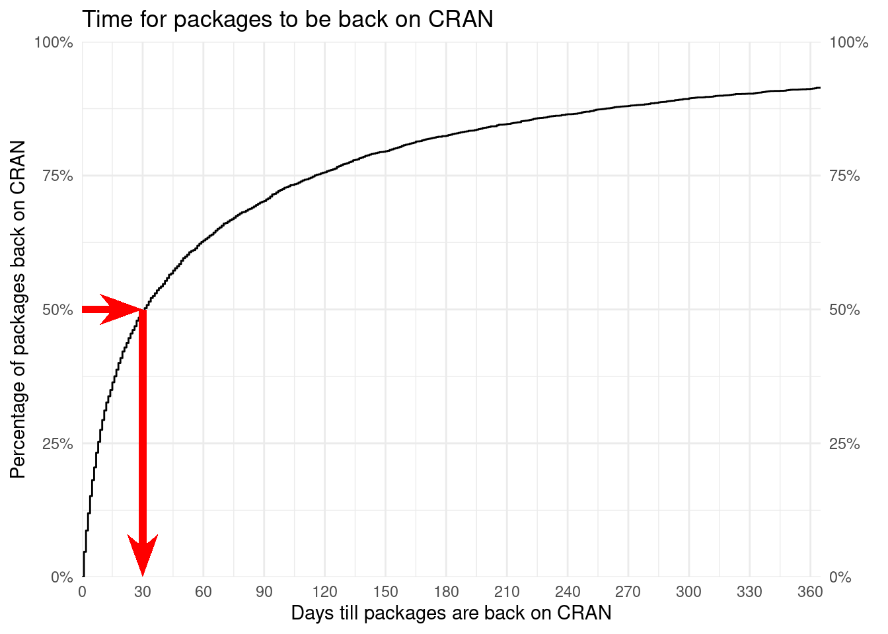
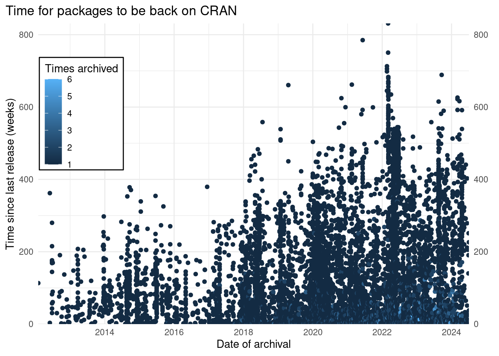
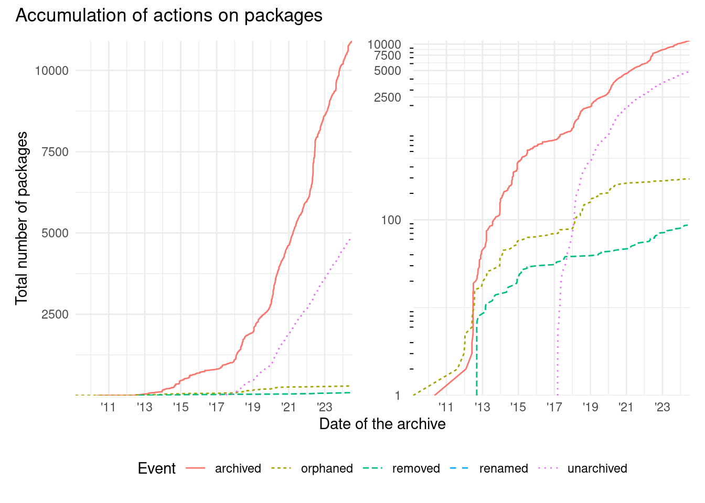

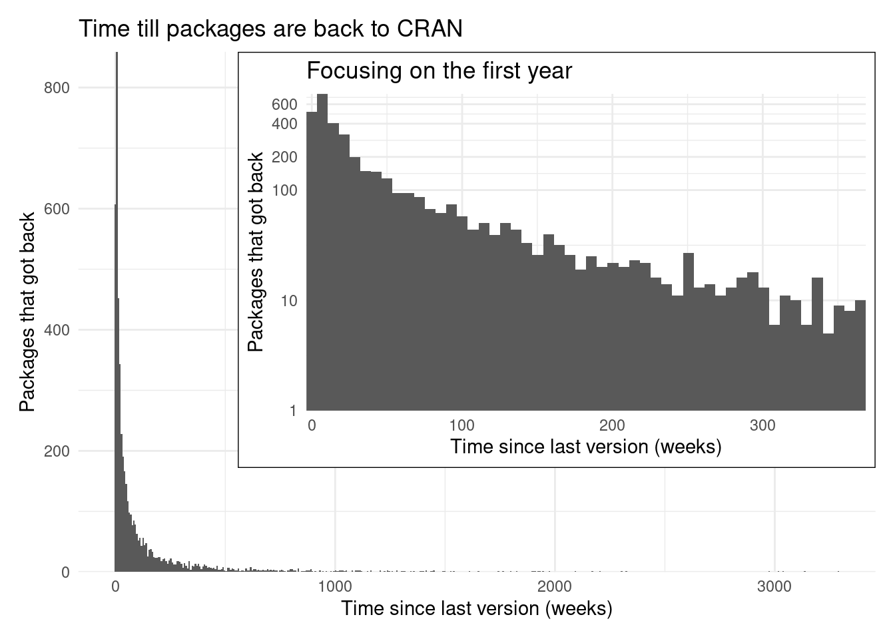
There have been at least 9089 packages archived from CRAN. From the total of 23058 in its whole history. Which results in 39% of all packages ever in CRAN got at one point archived.
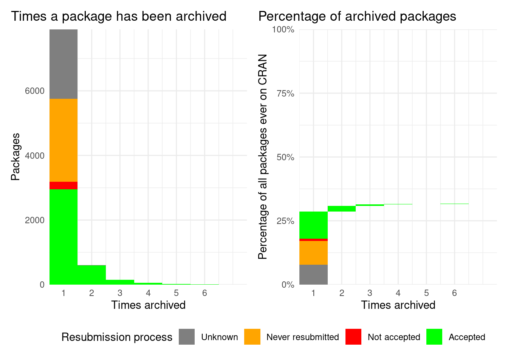
Most packages are not archived, but if they are mostly archived once. This is probably because 50% of those archived never get back to CRAN.
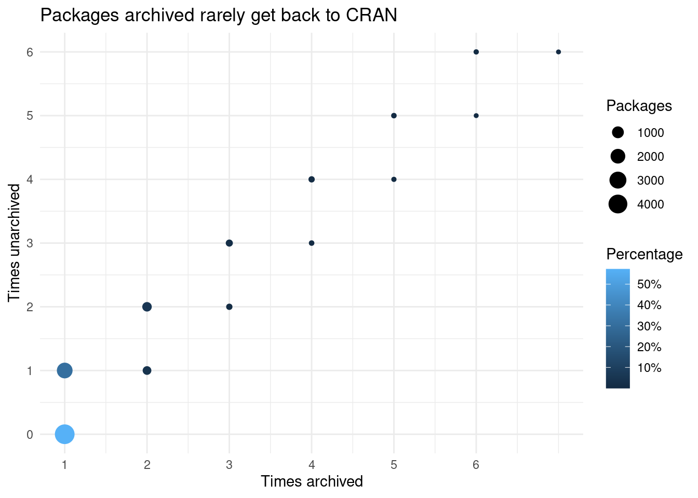
Approximately 38% packages gets back on CRAN.
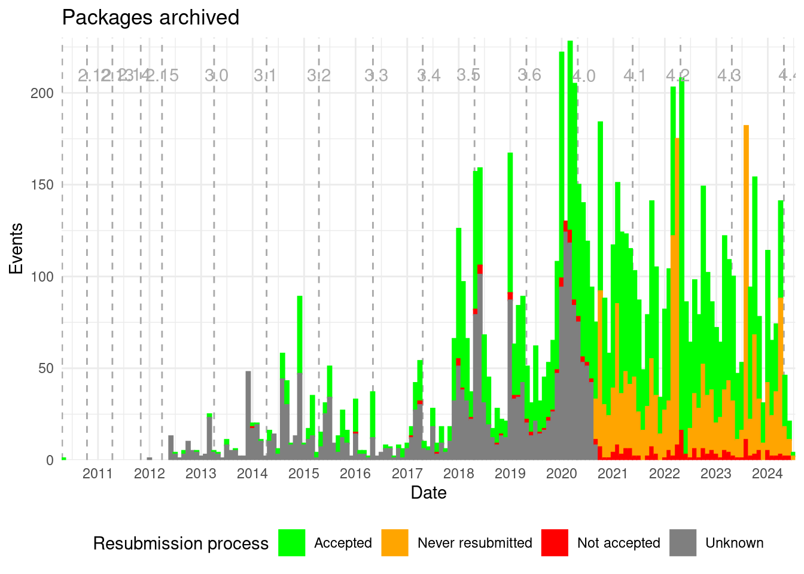
Notice how there are some packages that submitted a new version to CRAN after 2020-09-12, but where archived long before (those that are in red before that date). Those maintainers might need help to get their packages back on CRAN.
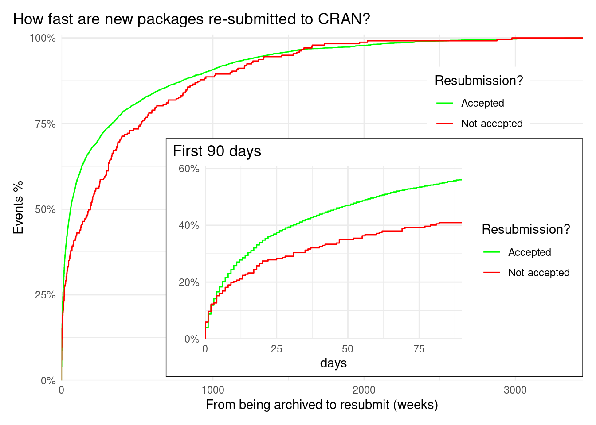
| Back to CRAN? | Events | % | % submitted |
|---|---|---|---|
| Accepted | 2558 | 48.696% | 95% |
| Never resubmitted | 2557 | 48.677% | NA |
| Not accepted | 138 | 2.627% | 5% |
Based on a the latest data available, which is NA of the archived packages, slightly more than half of the packages try to get back to CRAN. Those that try almost all of them eventually get back to CRAN.
But how fast is the process of being back on CRAN?
Most packages that get back to CRAN are accepted soon after submitting the new version fixing the problems of being archived. But some (~ 21%) spend most of the time trying to pass checks to comply with CRAN policies: maybe trying to fix issues detected on submission or waiting for CRAN maintainers feedback.
Packages are archived because they are not addressed/corrected in time. If we look in more detail on this packages we see there are 5150 packages that failed to correct in time. Most of them where archived once but some of them (1007) were archived multiple times.
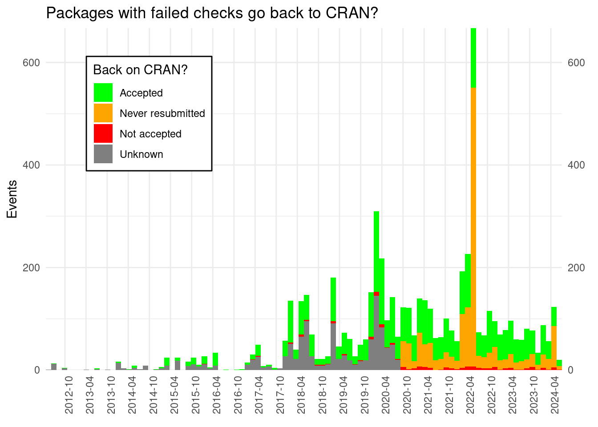
| Not fixed | Dependencies | Maintainer address | Policy violation | Packages |
|---|---|---|---|---|
| TRUE | FALSE | FALSE | FALSE | 5808 |
| FALSE | FALSE | FALSE | FALSE | 1458 |
| FALSE | TRUE | FALSE | FALSE | 1270 |
| FALSE | FALSE | FALSE | TRUE | 644 |
| FALSE | FALSE | TRUE | FALSE | 228 |
| TRUE | FALSE | TRUE | FALSE | 18 |
| TRUE | TRUE | FALSE | FALSE | 6 |
| FALSE | TRUE | FALSE | TRUE | 4 |
| TRUE | FALSE | FALSE | TRUE | 4 |
| FALSE | TRUE | TRUE | FALSE | 1 |
The first cause of archiving is packages not fixed, the second cause is not clear as it seems a mix o circumstances and difficulties parsing the cause. The third cause of archiving is due to a package it depends being archived and the fourth because the package didn’t comply with CRAN’s policy. The fifth most common reason is that the email address of the maintainer fails to receive emails.
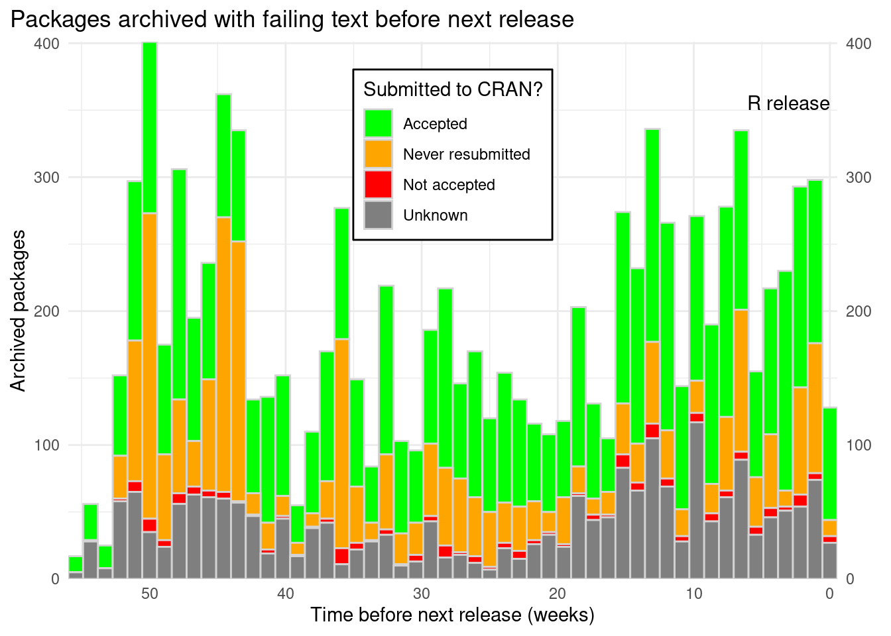
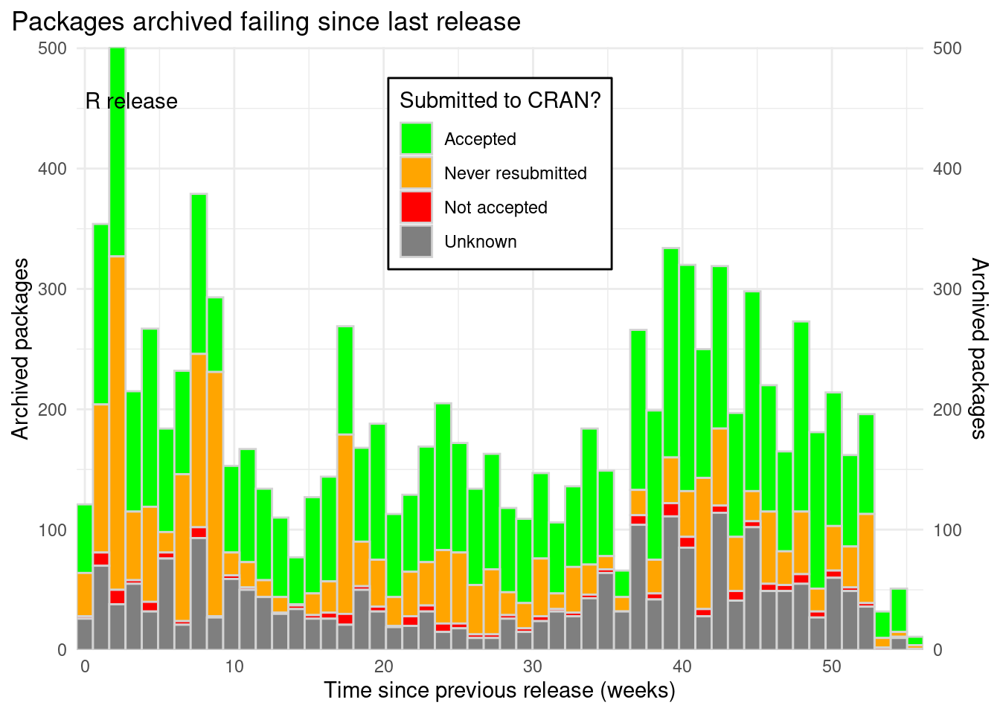
Only in 2022 and 2023 there has been a clear trend for packages that are archived closer to next release and after release respectively:

Packages are often archived after being first accepted. There is a peak of archived packages 2 weeks after the acceptance, but there are also packages archived before the usually 2 weeks period to fix issues. Passing the first month seems critical for packages as the rates later on seems more stable.

Packages that were already on CRAN are archived sooner after a new release. This matches the trend on first time accepted packages. If anything the trend to archive packages soon after being accepted is higher.
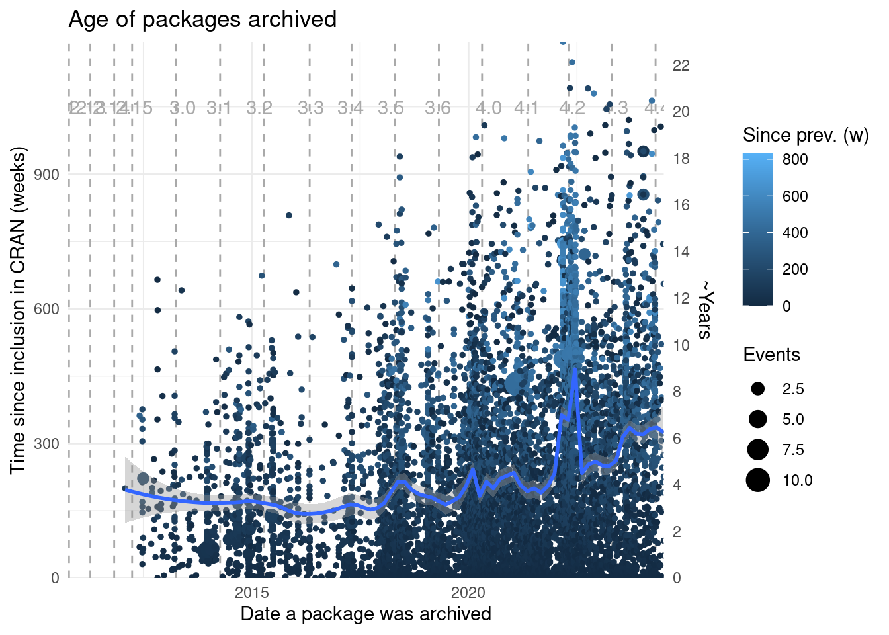
Age of packages archived is increasing, sometimes changes in TODO
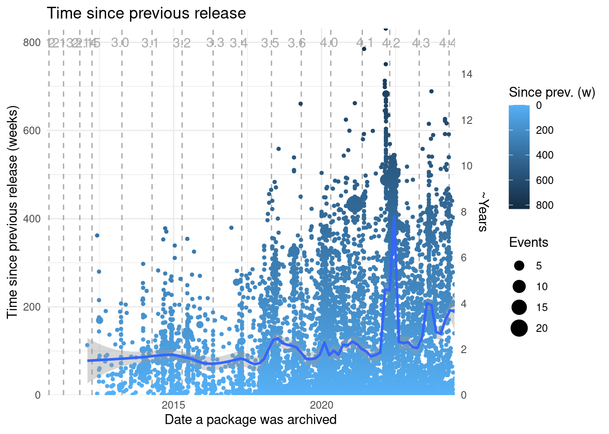
Packages archived keep updating to an almost fixed rate.
When a package is going to be archived CRAN sends an email to the maintainer which package in trouble and all the packages maintainers that depend on it. This often results in people stepping up and fixing the package. When this doesn’t happen, packages will be archived together with their dependency.
| Affected packages | Times |
|---|---|
| 1 | 439 |
| 2 | 148 |
| 3 | 81 |
| 4 | 42 |
| 5 | 34 |
| 6 | 24 |
| 7 | 12 |
| 8 | 1 |
| 9 | 4 |
| 11 | 3 |
| 12 | 2 |
| 14 | 2 |
| 17 | 6 |
| 20 | 2 |
| 22 | 2 |
The packages that affected more packages lead to 18 packages archived.
Those packages that were archived were mostly back on CRAN.
Sometimes the problem is with maintainer’s email.
As the time increase between being archived and the failing email, this seems to indicate that maintainers are now more careful with the email given.
Data sources used are tools:::CRAN_current_db(), tools:::CRAN_archive_db(), and PACKAGES.in. The first holds a data frame of packages currently on CRAN, which information on the package name, the package version, and the publishing timestamp. The second holds a list of data frames, each comprising the same package information for all versions ever published on CRAN, except the currently available version. The third, holds information on events for packages that have ever been archived, removed, orphaned, etc.↩︎